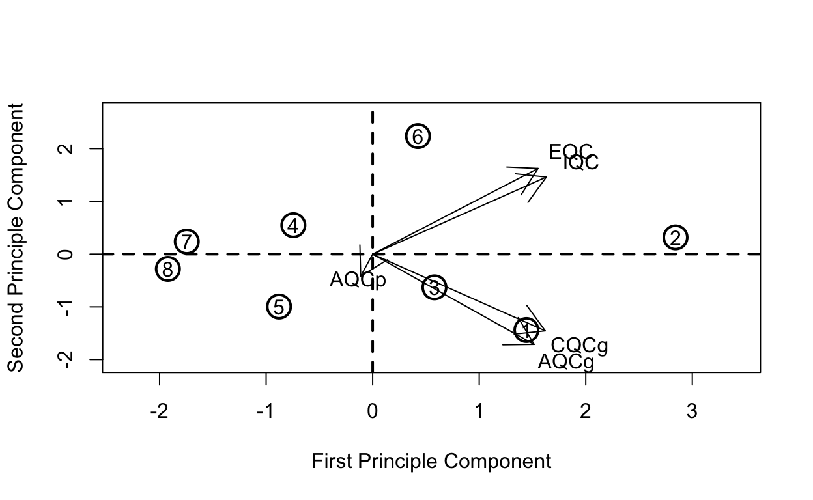
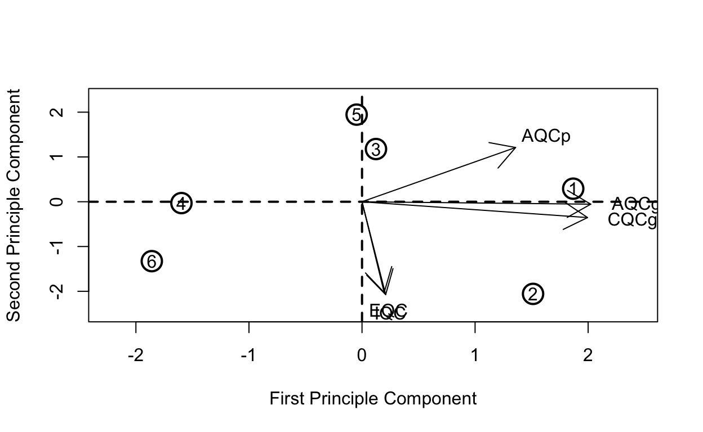

Installation and setup
Before we begin reading this tutorial and running the code, let us set up our R environment for this session. We will be using “renv” package in R to install all the necessary packages needed for the sessions.
Note: Due to the use of the development versions of R packages that are not available through conda repositories we are not able to generate a conda environment for this session and an alternative solution needs to be used.
setwd("~/Documents/GitHub/workshop_omics_integration/session_meta/")
getwd()## [1] "/Users/cob-aaf/Documents/GitHub/workshop_omics_integration/session_meta"## make sure that the renv.lock file for the session exists and do following.
install.packages("renv")
renv::init()If XML lib fails in ubuntu and you get the error “Error installing package ‘XML’:” go to terminal and install the libraries. “sudo apt-get update” followed by “sudo apt-get install libxml2-dev” Now, try the renv::init() again.
Introduction
Meta analyses are commonly used in clinical studies to assess the effect of a treatment or a genetic locus on a phenotype. With the advent of GWAS (Genome wide association studies), various studies report summary statistics on associated effects of genetic loci on phenotype. Meta analyses can be useful in determining whether the effect size is consistent across the body of data
The goal of a synthesis is to understand the results of any study in the context of all the other studies. First, we need to know whether or not the effect size is consistent across the body of data. If it is consistent, then we want to estimate the effect size as accurately as possible and to report that it is robust across the kinds of studies included in the synthesis. On the other hand, if it varies substantially from study to study, we want to quantify the extent of the variance and consider the implications. Meta-analysis is able to address these issues whereas the narrative review is not. We start with an example to show how meta-analysis and narrative review would approach the same question, and then use this example to highlight the key differences between the two.
Meta analyses Methods
- p-value
- Fisher: Sum of minus log-transformed P-values where larger Fisher score reflects stronger aggregated differential expression evidence.
- Stouffer: Sum of inverse normal transformed P-values where larger Stouffer score to reflect stronger aggregated statistical evidence.
- adaptively weighted Fisher(AW), original publication : assigns different weights to each individual study and it searches through all possible weights to find the best adaptive weight with the smallest derived p-value. One significant advantage of this method is its ability to indicate which studies contribute to the evidence aggregation and elucidates heterogeneity in the meta-analysis.
- minimum p-value (minP): The minP method takes the minimum p-value among the K studies as the test statistic
- maximum p-value (maxP): The maxP method takes maximum p-value as the test statistic
- rth ordered p-value (rOP): The rOP method takes the r-th order statistic among sorted p-values of Kcombined studies
Note: The assumption of uniformly distributed P-values under the null hypothesis or can be done non-parametrically by permutation-based analysis
- Effect Size based
- fixed effects model (FEM):FEM combines the effect size across K studies by assuming a simple linear model with an underlying true effect size plus a random error in each study
- random effects model (REM): REM extends FEM by allowing random effects for the inter-study heterogeneity in the model.
- Rank based
- rank product (rankProd)RankProd and RankSum are based on the common biological belief that if a gene is repeatedly at the top of the lists ordered by up- or down-regulation fold change in replicate experiments, the gene is more likely a DE gene.
- naive sum of ranks and naive product of ranks: These two methods apply a naïve product or sum of the DE evidence ranks across studies.
Statistical considerations
In addition to statistical methods mentioned above, a number of factors need to be considered for the choice of method. Different test statistics maybe used depending on the type of outcome variable (e.g. t-statistic or moderated t-statistic for binary outcome, F-statistic for multi-class outcome, regression or correlation coefficient for continuous outcome and log-rank statistic for survival outcome).
Here we will be using MetaDE package that has implemented above mentioned methods.
A summary of the methods and their implementations for respective outcome variables are listed in the table below as presented in the original publication.

For a detailed review of the applied methods for meta analyses, related benchmarks and
Data types
Required packages
library(magrittr)
library(plyr)
library(preproc)
library(MetaQC)
library(MetaDE)
library(MetaPath)
library(MetaDCN)Summary of the session
I this session we will be working with the “prostate8.rda” data set that is located in the data directory of the “session_meta” directory of the github repository for the course.
Some of the R packages packages we are using here are not available through conda repositories and therefore need to be install from the github repositories for the respective packages
The session comprises of following main steps
- Explore the data and the packages
- Filter the data based on QC
- Perform differential expression analyses and meta analyses
- Perfrom pathway analyses for meta analyses results
- Perfrom pathway meta analyses
- Network meta analyses (optional)
- Exercise: compare different meta analyses methods including AW-Fisher, REM, FEM ## Perform QC
Data for the session
We will using prostate dataset
Load the protaste data set
load(file = "./data/prostate8.rda")The prostate data is comprised of 8 microarray studies from different microarray platforms. Here it is provided in a list format where data matrices and corresponding labels are provided.
Let us take a quick look at the data.
names(prostate8)## [1] "data" "dataLabel"We can have a look at the structure of each data sets and evaluate what sort of filtering steps we need to take.
library(magrittr)
kableExtra::kable(lapply(prostate8$data, dim) %>% as.data.frame(row.names = c("genes", "samples")), booktabs = TRUE)| Welsh | Yu | Lapointe | Varambally | Singh | Wallace | Nanni | Tomlins | |
|---|---|---|---|---|---|---|---|---|
| genes | 8798 | 8799 | 13579 | 19738 | 8799 | 12689 | 12688 | 9703 |
| samples | 34 | 146 | 103 | 13 | 102 | 89 | 30 | 57 |
As we can see, the studies have different number of genes measured and contain different number of samples. In a meta analyses, studies can have different samples sizes but genes should match between different studies. To be able to merge data sets, all data matrices should have the same annotations
Let us look at the row names which are already set to gene names.
kableExtra::kable(lapply(prostate8$data, row.names) %>% lapply(.,head, 5), booktabs = TRUE)
|
|
|
|
|
|
|
|
It is clear that the gene names are set to gene symbols for all data sets and we can merge theses data set.
The second element of the lists corresponds to data labels where each value corresponds to disease status of the individual where the sample came from.
prostate8$dataLabel## $Welsh
## [1] 0 0 0 0 0 0 0 0 0 1 1 1 1 1 1 1 1 1 1 1 1 1 1 1 1 1 1 1 1 1 1 1 1 1
##
## $Yu
## [1] 0 0 0 0 0 0 0 0 0 0 0 0 0 0 0 0 0 0 0 0 0 0 0 0 0 0 0 0 0 0 0 0 0 0 0 0 0
## [38] 0 0 0 0 0 0 0 0 0 0 0 0 0 0 0 0 0 0 0 0 0 0 0 0 0 0 0 0 0 0 0 0 0 0 0 0 0
## [75] 0 0 0 0 0 0 0 1 1 1 1 1 1 1 1 1 1 1 1 1 1 1 1 1 1 1 1 1 1 1 1 1 1 1 1 1 1
## [112] 1 1 1 1 1 1 1 1 1 1 1 1 1 1 1 1 1 1 1 1 1 1 1 1 1 1 1 1 1 1 1 1 1 1 1
##
## $Lapointe
## [1] 0 0 0 0 0 0 0 0 0 0 0 0 0 0 0 0 0 0 0 0 0 0 0 0 0 0 0 0 0 0 0 0 0 0 0 0 0
## [38] 0 0 0 0 1 1 1 1 1 1 1 1 1 1 1 1 1 1 1 1 1 1 1 1 1 1 1 1 1 1 1 1 1 1 1 1 1
## [75] 1 1 1 1 1 1 1 1 1 1 1 1 1 1 1 1 1 1 1 1 1 1 1 1 1 1 1 1 1
##
## $Varambally
## [1] 0 0 0 0 0 0 1 1 1 1 1 1 1
##
## $Singh
## [1] 0 0 0 0 0 0 0 0 0 0 0 0 0 0 0 0 0 0 0 0 0 0 0 0 0 0 0 0 0 0 0 0 0 0 0 0 0
## [38] 0 0 0 0 0 0 0 0 0 0 0 0 0 1 1 1 1 1 1 1 1 1 1 1 1 1 1 1 1 1 1 1 1 1 1 1 1
## [75] 1 1 1 1 1 1 1 1 1 1 1 1 1 1 1 1 1 1 1 1 1 1 1 1 1 1 1 1
##
## $Wallace
## [1] 0 0 0 0 0 0 0 0 0 0 0 0 0 0 0 0 0 0 0 0 1 1 1 1 1 1 1 1 1 1 1 1 1 1 1 1 1 1
## [39] 1 1 1 1 1 1 1 1 1 1 1 1 1 1 1 1 1 1 1 1 1 1 1 1 1 1 1 1 1 1 1 1 1 1 1 1 1 1
## [77] 1 1 1 1 1 1 1 1 1 1 1 1 1
##
## $Nanni
## [1] 0 0 0 0 0 0 0 1 1 1 1 1 1 1 1 1 1 1 1 1 1 1 1 1 1 1 1 1 1 1
##
## $Tomlins
## [1] 0 0 0 0 0 0 0 0 0 0 0 0 0 0 0 0 0 0 0 0 0 0 0 0 0 0 0 1 1 1 1 1 1 1 1 1 1 1
## [39] 1 1 1 1 1 1 1 1 1 1 1 1 1 1 1 1 1 1 1Data labels indicate “0” as control and “1” as disease groups. We can set these values to character format for convenience.
If everything looks good, we are good to go to the next step.
Take a moment to explore the data in your own ways and fimilarise yourself wit it.
Data preprocessing
Gene matching
Usually different microarray platforms use their own probe IDs or experiments from different omics platforms can have annotations for transcripts of proteins. To perform meta-analysis, one needs to match probe/transcript IDs from different platforms to the unique official gene ID, such as ENTREZ ID or gene symbol.
Options for situations for microarray data include
- take the average value of expression values across multiple probe IDs to represent the corresponded gene symbol
- select the probe ID with the largest interquartile range (IQR) of expression
- Or some version of summary at the gene level depending on the omics platform.
We do not cover the pre-processing steps for different omics technologies at the moment but the workshop participants are encouraged to apply the domain specific knowledge when setting up a meta analyses study.
kableExtra::kable(MetaQC::metaOverlap(prostate8$data) %>%
lapply(dim) %>% as.data.frame(row.names = c("genes", "samples")), booktabs = TRUE)| Welsh | Yu | Lapointe | Varambally | Singh | Wallace | Nanni | Tomlins | |
|---|---|---|---|---|---|---|---|---|
| genes | 4241 | 4241 | 4241 | 4241 | 4241 | 4241 | 4241 | 4241 |
| samples | 34 | 146 | 103 | 13 | 102 | 89 | 30 | 57 |
As you can see here, only 4241 genes are present in all studies and if we are to filter out this way, we lose a lot of data.
Biologically, it is likely that most genes are either un-expressed or un-informative. In gene expression analysis to find DE genes, these genes contribute to the false discoveries, so it is desirable to filter out these genes prior to analysis. After genes are matched across studies, the unique gene symbols are available across all studies. Two sequential steps of gene filtering can be performed. In the first step, we filter out genes with very low gene expression that are identified with small average expression values across majority of studies.
You can take a look at preproc package for some of the functions available for filtering the data and the intuition behind the methods. Here Annotate(), Impute(), Filter() and Merge() maybe useful for pre-processing steps of the data analyses.
data2 <- prostate8$data
data2 <- preproc::Merge(data2)## Warning in if (class(datasets[[1]]) == "matrix") Merge.matrix(datasets) else
## if (class(datasets[[1]]) == : the condition has length > 1 and only the first
## element will be useddata.type = rep("microarray", length(data2)) # a character vector for each study type
data2_filt <- preproc::Filter(data2, del.perc = c(0.1, 0.1),data.type = data.type ) # Here we specify the percentage of genes to be filtere, and specify the type of data for each study
summary_preproc <- rbind(as.data.frame(lapply(prostate8$data, dim))[1,],
as.data.frame(lapply(data2, dim))[1,],
as.data.frame(lapply(data2_filt, dim))
)
rownames(summary_preproc) <- c("orginal", "merged", "mergeFiltered", "samples")
kableExtra::kable(summary_preproc, booktabs = TRUE)| Welsh | Yu | Lapointe | Varambally | Singh | Wallace | Nanni | Tomlins | |
|---|---|---|---|---|---|---|---|---|
| orginal | 8798 | 8799 | 13579 | 19738 | 8799 | 12689 | 12688 | 9703 |
| merged | 4241 | 4241 | 4241 | 4241 | 4241 | 4241 | 4241 | 4241 |
| mergeFiltered | 3434 | 3434 | 3434 | 3434 | 3434 | 3434 | 3434 | 3434 |
| samples | 34 | 146 | 103 | 13 | 102 | 89 | 30 | 57 |
Note that the multiple gene expression data sets may not be very well aligned by genes, and the number of genes in each study maybe different. When we combine a large number of studies, the number of common genes may be very small, so we need to allow for genes appearing in most studies and missing in few studies etc.
Load pathway database
Let us perform quality control of the data for this meta analyses. We are using the “MetaQC” that identifies ways to objectively perform quality control for the microarray studies.
#load(file = "./data/pathways.rda")
load(file = "./data/pathwayDatabase.rda")
## Let us look into the database
pathway_names <- pathwayDatabase %>% names() %>% stringr::str_split(pattern = "_", simplify = TRUE) %>% {.[,1]} %>% unique()
print(pathway_names)
DList=prostate8$data
colLabel=prostate8$dataLabel
#GList=pathway[[1]]
GList=pathwayDatabase
filterGenes=TRUE
cutRatioByMean=0.2 #
cutRatioByVar=0.2
QCresult=MetaQC(DList, colLabel, GList,filterGenes,cutRatioByMean,cutRatioByVar) ## This will take some time depending on the number of studies and the type of datakableExtra::kable(QCresult$scoreTable, booktabs = TRUE)| IQC | EQC | AQCg | AQCp | CQCg | CQCp | |
|---|---|---|---|---|---|---|
| Welsh | 3.9754526 | 4.0671059 | 33.3693516 | 4.770316 | 188.3863094 | 410 |
| Yu | 9.6777279 | 8.7893559 | 29.8963097 | 12.931269 | 172.8240650 | 410 |
| Lapointe | 3.7134470 | 4.4921021 | 25.0966984 | 16.416134 | 100.7034534 | 410 |
| Varambally | 3.7134470 | 3.5224557 | 4.5085131 | 0.000000 | 26.6559834 | 410 |
| Singh | 1.7315604 | 1.8478981 | 16.3348915 | 66.488268 | 48.2152305 | 410 |
| Wallace | 8.1666052 | 8.8880394 | 0.0364897 | 25.144610 | 0.0060950 | 410 |
| Nanni | 1.0232669 | 1.9239147 | 0.0000000 | 0.000000 | 0.6822836 | 410 |
| Tomlins | 0.4933381 | 0.5033783 | 1.9044123 | 10.330613 | 12.8201866 | 410 |
IQC, EQC, AQCg, AQCp, CQCg, CQCp
Internal quality control index:small IQC indicated that the study had heterogeneous coexpression structure with other studies and was considered a candidate problematic study that should be excluded from meta-analysis
the external quality control (EQC): small EQC indicated that the study had low association with pathway in terms of gene pairwise correlation structure and maybe considered a candidate problematic study.
accuracy quality control (AQC) and a consistency quality control (CQC).
Large AQCg measure for a given study indicate that DE genes produced by study were reproducible compared to DE genes detected by meta-analysis excluding study
Having a large CQCg measure for a given study indicated that DE evidence produced by study was consistent with DE evidence generated by meta-analysis excluding study. Please read the original MetQC publication for a better understanding of the measures.
We can now look at the two dimensional biplot based on PCA analyses and get an idea of any studies that may not be of great quality.
MetaQC::plotMetaQC(QCresult$scoreTable)
Although the plotMetaQC() function is a useful tool for visualization, it does not necessarily allow automatic inclusion/exclusion criteria.
Note that our visualization and summarization tools were not meant for an automated recommendation for inclusion/exclusion decision. In the examples we explored, there were roughly three categories in the QC results: definite exclusion cases with poor quality, definite inclusion cases with good quality and borderline cases.
Here Nanni and Tomlins are the two studies that maybe of low quality and should perhaps be excluded from the analyses.
filterGenes=TRUE
cutRatioByMean=0.2 #
cutRatioByVar=0.2
to_remove <- c("Nanni", "Tomlins")
prostate6 <- list(data = within(prostate8$data, rm(Nanni, Tomlins)), dataLabel=within(prostate8$dataLabel, rm(Nanni, Tomlins)))
prostate_fil <- list(data = MetaQC::metaOverlap(prostate6$data), dataLabel=prostate6$data)
prostate6$data <-MetaQC::metaFilterData(prostate_fil$data,cutRatioByVar = cutRatioByVar, cutRatioByMean = cutRatioByMean)
lapply(prostate6, names)## $data
## [1] "Welsh" "Yu" "Lapointe" "Varambally" "Singh"
## [6] "Wallace"
##
## $dataLabel
## [1] "Welsh" "Yu" "Lapointe" "Varambally" "Singh"
## [6] "Wallace"kableExtra::kable(as.data.frame(lapply(prostate6$data, dim)), booktabs = TRUE)| Welsh | Yu | Lapointe | Varambally | Singh | Wallace |
|---|---|---|---|---|---|
| 4441 | 4441 | 4441 | 4441 | 4441 | 4441 |
| 34 | 146 | 103 | 13 | 102 | 89 |
DList=prostate6$data
colLabel=prostate6$dataLabel
#GList=pathway[[1]]
GList=pathwayDatabase
filterGenes=TRUE
cutRatioByMean=0.2 #
cutRatioByVar=0.2
QCresult2=MetaQC(DList, colLabel, GList,filterGenes,cutRatioByMean,cutRatioByVar)kableExtra::kable(QCresult2$scoreTable, booktabs = TRUE)| IQC | EQC | AQCg | AQCp | CQCg | CQCp | |
|---|---|---|---|---|---|---|
| Welsh | 3.7730194 | 2.784275 | 71.8151852 | 6.006001 | 278.276330 | 410 |
| Yu | 7.6904488 | 8.582181 | 58.3058931 | 4.909503 | 252.078158 | 410 |
| Lapointe | 1.6703062 | 1.281574 | 39.7832310 | 4.776324 | 134.483776 | 410 |
| Varambally | 3.0322791 | 3.470636 | 8.9101248 | 0.000000 | 35.007095 | 410 |
| Singh | 0.7670506 | 1.385652 | 24.1760513 | 9.603674 | 69.551325 | 410 |
| Wallace | 6.4044351 | 5.736912 | 0.0038734 | 0.000000 | 0.000635 | 410 |
plotMetaQC(scoreTable = QCresult2$scoreTable)
Meta Differential Expression analyses
We have listed the methods for differential expression meta analyses in the introduction section that are implemented in the MetaDE package. Here we will try the best performing methods including AW Fischer, REM and rOP. A detailed comparison of relative performances of each of the statistical methods is descibed Lun-Ching etal.
data <- prostate6$data # Extract the expression matrices
clin.data <- prostate6$dataLabel # extract lables for each sample
K <- length(data)
clin.data <- lapply(clin.data, function(x) {data.frame(x)} )
for (k in 1:length(clin.data)){
colnames(clin.data[[k]]) <- "label"
clin.data[[k]] <- (ifelse(clin.data[[k]]==0, "Control", "Cancer"))
}
#clin.data <- lapply(clin.data, function(x) {data.frame(x)} )
select.group <- c("Control", "Cancer")
ref.level <- "Control"
data.type <- "continuous"
ind.method <- rep('limma',length(data))
resp.type <- "twoclass"
paired <- rep(FALSE,length(data))
meta.method <- "Fisher"
meta.res <- MetaDE(data=data,clin.data = clin.data,
data.type=data.type,resp.type = resp.type,
response='label',
ind.method=ind.method, meta.method=meta.method,
select.group = select.group, ref.level=ref.level,
paired=paired,tail='abs',parametric=TRUE)## Please make sure the following is correct:
## *You input 6 studies
## *You selected limma limma limma limma limma limma for your 6 studies respectively
## * Fisher was chosen to combine the 6 studies,respectively
## dataset 1 is done
## dataset 2 is done
## dataset 3 is done
## dataset 4 is done
## dataset 5 is done
## dataset 6 is done
## Parametric method was used instead of permutationhead(MetaDE::summary.meta(meta.res, resp.type = resp.type, meta.method = meta.method))Plot results in a heatmap.
fdr.cut <- 1e-7
pdf('heatmap.test.pdf')
heatmap.sig.genes(meta.res, meta.method=meta.method,
fdr.cut=fdr.cut,color="GR")
dev.off()
heatmap
Pathway analyses based on meta analyses
At this stage, one can do pathway analyses directly on the genes that appear to be differentially regulated based on the meta analyses performed above.
meta.p <- meta.res$meta.analysis$pval
ks.result <- PathAnalysis(meta.p = meta.p, enrichment = "KS")
fisher.result <- PathAnalysis(meta.p = meta.p, enrichment = "Fisher's exact")
path.res <- MetaDE::PathAnalysis(meta.p ,pathway = pathwayDatabase, p.cut = 0.05,
enrichment = "Fisher's exact", DEgene.number = 400, size.min = 10, size.max = 500)The pathway analyses performed here is based on the p-values obtained after the joint meta analyses of all the studies in your data. Some time individual study level pathway analyses is reported and we are interested in combining pathway level summary statistics. We will explore that in our next session where we will perform the analyses using “MetaPath” package.
Exercise
Perform DE meta analyses using any two methods among “AW-Fisher”, “FEM,”REM and “minMCC” and compare the number of differentially expressed genes detected at FDR <0.05. Take a look at the /Users/cob-aaf/Library/Application Support/renv/cache/v5/R-4.0/x86_64-apple-darwin17.0/MetaDE/2.2.3/8598944739859703e37b4623921341ac/MetaDE/help/MetaDE function to change the parameters.
Perform pathway analyses based one of the methods you tried and see whether any differences at pathway level were detected.
meta.method <- "AW"
meta.res <- MetaDE(data=data,clin.data = clin.data,
data.type=data.type,resp.type = resp.type,
response='label',covariate = NULL,
ind.method=ind.method, meta.method=meta.method,
select.group = select.group, ref.level=ref.level,
paired=paired, rth=NULL,
REM.type=NULL,tail='abs',parametric=TRUE)meta.method <- "FEM"
meta.res <- MetaDE(data=data,clin.data = clin.data,
data.type=data.type,resp.type = resp.type,
response='label',
ind.method=ind.method, meta.method=meta.method,
select.group = select.group, ref.level=ref.level,
paired=paired, tail='abs')meta.method <- "REM"
REM.type <- "HO"
meta.res <- MetaDE(data=data,clin.data = clin.data,
data.type=data.type,resp.type = resp.type,
response='label',
ind.method=ind.method, meta.method=meta.method,
select.group = select.group, ref.level=ref.level,
paired=paired,
REM.type=REM.type,tail='abs')meta.method <- 'minMCC'
meta.res <- MetaDE(data=data,clin.data = clin.data,
data.type=data.type,resp.type = resp.type,
response='label',
ind.method=ind.method, meta.method=meta.method,
select.group = select.group, ref.level=ref.level,
paired=paired,tail='abs',parametric=FALSE,nperm=100)Pathway analyses
Pathway analysis (a.k.a. gene set analysis) is a statistical tool to infer correlation of differential expression evidence in the data with pathway knowledge from established databases. The idea behind pathway analysis is to determine if there is enrichment in the detected DE genes based on an a priori defined biological category. Such a category might come from one or multiple databases such as Gene Ontology (GO; www.geneontology.org), the Kyoto Encyclopedia of Genes and Genomes (KEGG; http://www.genome.jp/kegg/), Biocarta Pathways (http://www.biocarta.com/) and the comprehensive Molecular Signatures Database (MSigDB; http://www.broadinstitute.org/gsea/msigdb/). For the majority of recent microarray meta-analysis applications, pathway analysis has been a standard follow-up to identify pathways associated with detected DE genes e.g. and many others]. The result provides more insightful biological interpretation and it has been reported that pathway analysis results are usually more consistent and reproducible across studies than DE gene detection. Shen and Tseng developed a systematic framework of Meta-Analysis for Pathway Enrichment (MAPE) by combining information at gene level, at pathway level and a hybrid of the two.
Step1
load("./data/pathways.rda")
CPI_result = MAPE2.0(arraydata = data , clinical.data = clin.data,
label = "label",pmtx = NULL,pathway = c(Biocarta.genesets, GOBP.genesets,
GOCC.genesets, GOMF.genesets, KEGG.genesets, Reactome.genesets), data.type ="discrete",
resp.type = "twoclass",method = "CPI", ind.method = rep("limma",length(data)),
paired =rep(FALSE,length(data)),select.group=select.group, ref.level=ref.level ,
tail="abs", enrichment = "Fisher's exact", DEgene.number = 400,stat = "AW Fisher")Step 2
set.seed(15213)
CPI.kappa_result = MAPE.Kappa(summary = CPI_result$summary,pathway = CPI_result$pathway,
max_k = 8, q_cutoff = 0.0005,software = CPI_result$method, output_dir = "./results")
#data(hashtb)
data("./data/hashtb.rda")
#xx <- data(hashtb)
set.seed(111222333)
MAPE.Clustering.results <- MAPE.Clustering(summary=CPI_result$summary,Num_Clusters = 10,
kappa.result = CPI.kappa_result$kappa,sil_cut=0.1,
Num_of_gene_lists=CPI_result$Num_of_gene_lists,genelist =CPI_result$genelist,
pathway=CPI_result$pathway, enrichment=CPI_result$enrichment,
method=CPI.kappa_result$method,software=CPI_result$method,
n.text.permute = 10000, output_dir = "./results" )cluster membershio scoring

consensus clustering
Network Meta analyses using MetaDCN
Co-expression analysis and network analysis of microarray data are used to investigate potential transcriptional co-regulation and gene interactions. Network analyses typically work with the gene–gene co-expression matrix, which represents the correlation between each pair of genes in the study. A crucial assumption is that the magnitude of the co-expression between any pair of genes is associated with a greater likelihood that the two genes interact. Thus, networks of interactions between genes are inferred from the co-expression matrix.
Here we will use MetaDCN to extract network modules in disease vs control conditions.

MetaDCN
data("./data/pathwayDatabase.rda")
#data(example)
# Generate correction and adjacency matrices for data and permutation
# GeneNet returns a list of information which will be used for SearchBM and MetaDCN function, and several RData files stored in folder path.
# AdjacencyMatrices.RData is a list of adjacency matrices for case and control in each study in the order of case studies and control studies.
#
# CorrelationMatrices.RData is a list of correlation matrices for case and control in each study.
#
# AdjacencyMatricesPermutationP.RData is a list of correlation matrices for case and control in each study in permutation P.
GeneNetRes.2 <- GeneNet(data , clin.data, caseName="Cancer", controlName="Control", meanFilter=0.8, SDFilter=0.8, edgeCutoff=0.1, permutationTimes=4, CPUNumbers=4, pathwayDatabase=c(Biocarta.genesets,GOBP.genesets,GOCC.genesets,GOMF.genesets,
KEGG.genesets,Reactome.genesets), silent=FALSE, folder = "./MetaDCN")# This function will search for basic modules differentially co-expressed between case and control
# SearchBM will return a list and several Rdata, csv and png files saved in the folder path specified in GeneNet inputs.List of basic module information:
# w1
# w1 weight with the most basic modules detected
#
# BMInCase
# data matrix listing the information of basic modules higher correlated in case
#
# BMInControl
# data matrix listing the information of basic modules higher correlated in control
#
# permutation_energy_direction_p.Rdata is a list of energies of basic modules from permutation p.
#
# basic_modules_summary_direction_weight_w.csv is a summary of basic modules detected using weight w in forward/backward search.
#
# threshold_direction.csv is a table listing number of basic modules detected under different FDRs in forward/backward search.
#
# figure_basic_module_c_repeat_r_direction_weight_w.png is a plot of basic module from component c repeat r using weight w in forward/backward search.
SearchBMRes <- SearchBM(GeneNetRes.2, MCSteps=500, jaccardCutoff=0.8, repeatTimes=3, outputFigure=TRUE, silent=FALSE)#This function will assemble basic modules detected from SearchBM into supermodules.
# w1:w1 used
#
# BMInCaseSig: Summary of basic modules higher correlated in Case controling FDR
#
# BMInControlSig
# Summary of basic modules higher correlated in Control controling FDR
#
# Supermodule: Summary of supermodules
#A number chosen from (100, 200, ..., 700) to specify the weight1 used in objective function (optional). If not specified, w1 from SearchBM function will be used (recommended).
MetaDNCRes <- MetaDCN(GeneNetRes.2, SearchBMRes, FDRCutoff=0.05, w1=NULL, silent=FALSE)
You get the modules, their pathway annotations and cytoscape files in the results directory.